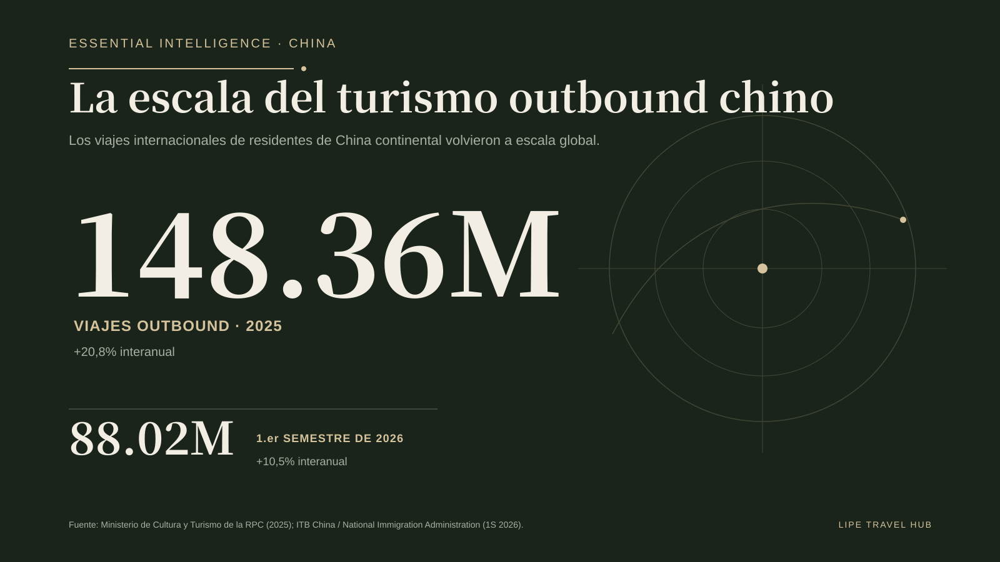
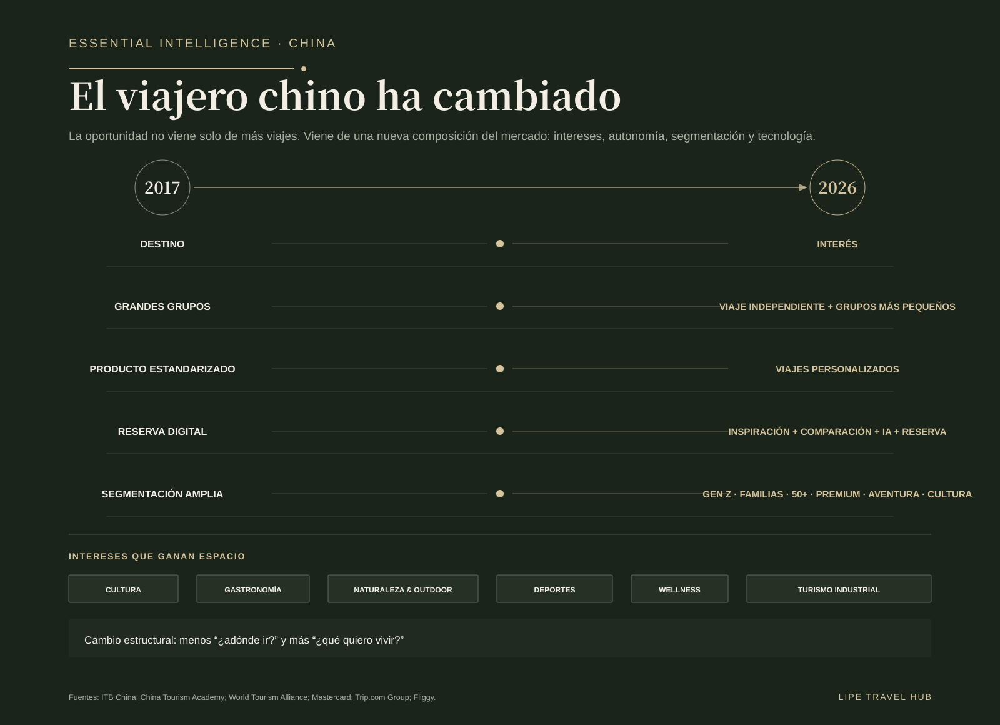
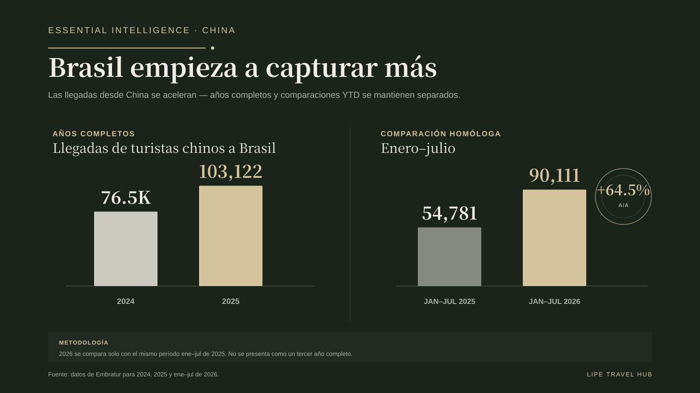
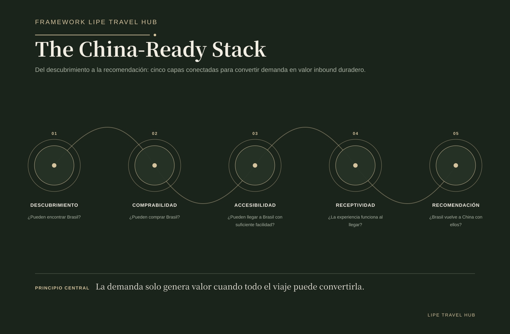
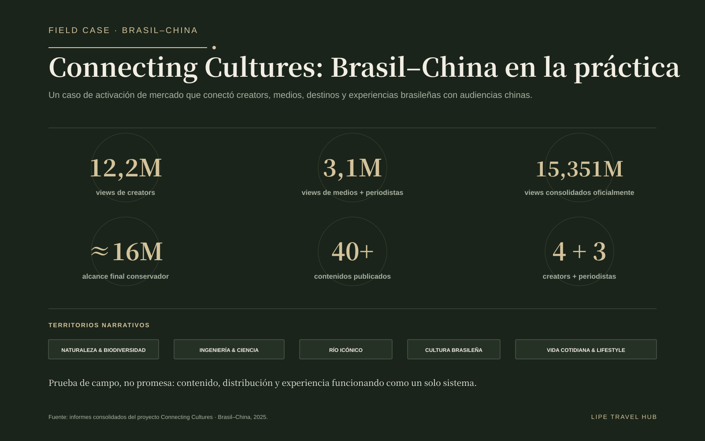

La escala volvió. La competencia también.
Los viajes outbound desde China volvieron a escala. En 2025, el mercado registró 148,36 millones de viajes, un 20,8% más que el año anterior. En el primer semestre de 2026 alcanzó 88,02 millones, con otro crecimiento del 10,5%. La pregunta global ya no es si la demanda china volvería, sino qué destinos podrán captarla con mayor eficacia.
Brasil también gana tracción. Tras recibir 76,5 mil visitantes chinos en 2024, superó los 103 mil en 2025. Entre enero y julio de 2026 alcanzó 90.111 llegadas frente a 54.781 en el mismo período de 2025: +64,5%. Son universos estadísticos distintos — los viajes outbound chinos no equivalen a llegadas internacionales a Brasil —, por lo que no deben presentarse como una cuota de mercado directa. Sirven para leer escala y distancia competitiva.

Entrar en el grupo competitivo es apenas el comienzo.
Para 2024, los viajeros chinos ya habían llegado a más de 210 países y regiones. Casi 20 destinos recibían más de un millón de visitantes chinos y más de 60 superaban los 100 mil. Que Brasil haya cruzado ese umbral en 2025 es relevante, pero también muestra el nivel competitivo al que apenas empieza a incorporarse.
Menos fricción de entrada en 2026 ayuda, pero acceso no es conversión. Facilitar la entrada es distinto de facilitar descubrimiento, comparación, compra, recepción y recomendación. La ventaja real se construye cuando el interés se convierte en producto distribuible.
El viajero cambió más en composición que en escala.
Leer 2017 frente a 2025 solo como recuperación pierde la transformación central. El viaje pasa de destination-led a interest-led; los grandes grupos conviven con viajeros independientes y grupos pequeños y flexibles; los productos estandarizados ceden espacio a recorridos personalizados; y la jornada digital combina inspiración, comparación, IA y reserva.
La segmentación también se profundiza. Gen Z, familias, viajeros silver, premium, aventura y cultura exigen propuestas distintas. Y el mapa de intereses se amplía: cultura, gastronomía, naturaleza y outdoor, deportes, wellness y turismo industrial aparecen como verdaderos motores de viaje.

Brasil tiene los activos. El desafío es convertirlos en producto reservable.
Tener un atractivo no es lo mismo que tener un producto internacional. Para entrar en la jornada de compra, el activo debe ser comprensible, tener precio y disponibilidad, estar distribuido, conectado con la logística y preparado para recibir al viajero.
Itaipu ilustra la oportunidad. Brasil puede vender más que naturaleza y postales: ingeniería, ciencia, energía y turismo industrial pueden conectar con segmentos guiados por intereses. La ganancia estratégica está en convertir esos activos en experiencias encontrables y reservables.


El nuevo campo de batalla es digital.
Descubrimiento social, Xiaohongshu, WeChat, Weibo, OTAs y plataformas chinas, creators, contenido estructurado y planificación asistida por IA están acortando la distancia entre inspiración y compra. El producto necesita ser legible no solo para el viajero, sino para los sistemas que cada vez más organizarán el viaje por él.
Para destinos y empresas, contenido localizado, datos estructurados, inventario claro, distribución relevante y presencia en las plataformas correctas dejan de ser “marketing para China” y pasan a formar parte de la infraestructura comercial del mercado.

The China-Ready Stack
Lipe Travel Hub organiza esa capacidad en cinco capas conectadas: Discoverability, Bookability, Accessibility, Receivability y Advocacy. Ninguna funciona sola. Ser encontrado sin poder reservar genera fricción; vender sin preparar la experiencia daña reputación; recibir bien sin activar advocacy desperdicia valor después del viaje.
Ser China-ready, por tanto, no significa simplemente traducir. Significa diseñar una jornada coherente entre deseo, distribución, acceso, operación y recomendación.

Field Case: Connecting Cultures
Connecting Cultures, realizado en 2025, aporta evidencia de campo sobre cómo distintas narrativas brasileñas activan intereses diferentes. Cuatro creators y tres periodistas recorrieron São Paulo, Foz do Iguaçu y Río de Janeiro, produciendo historias sobre naturaleza y biodiversidad, ingeniería y ciencia, Río icónico, cultura brasileña y vida cotidiana.
Los resultados consolidados incluyeron 12,2 millones de visualizaciones de creators, 3,1 millones de visualizaciones de medios y periodistas, 15,351 millones oficialmente consolidadas y aproximadamente 16 millones de alcance final conservador tras crecimiento posterior y reposts, además de más de 40 piezas publicadas. El punto no es el alcance aislado: es la evidencia de que no existe una única narrativa de Brasil para China.



La conectividad sigue siendo la gran fricción estructural.
Brasil no puede competir con destinos asiáticos de corta distancia en conveniencia. Debe competir en singularidad, profundidad de experiencia y valor percibido. Eso convierte la conectividad en parte de la estrategia de producto, no solo en un tema de aviación.
La infraestructura institucional Brasil–China — promoción, facilitación y cooperación — ayuda a reducir barreras. Pero el resultado comercial dependerá de que destinos y empresas conviertan esa base en oferta efectivamente comprable.
La oportunidad Brasil–China: siete movimientos que importan ahora.
- Dejar de traducir. Empezar a localizar.
- Hacer que el turismo brasileño sea reservable.
- Diseñar para intereses, no solo para destinos.
- Construir una experiencia China-ready.
- Tratar la conectividad como estrategia de producto.
- Convertir visitantes en medios.
- Medir conversión, no solo visibilidad.
Brasil no necesita ganar 148 millones de viajes. Necesita mejorar su capacidad de convertir una pequeña parte, creciente y de alto valor de ese flujo. La oportunidad ya está en movimiento. La próxima fase debe medirse menos por el potencial declarado y más por la captura real.
Fuentes y metodología
Fuentes y metodología: ITB China; Ministry of Culture and Tourism of the People’s Republic of China; National Immigration Administration of China; China Tourism Academy; World Tourism Alliance; Mastercard; Trip.com Group / Ctrip; Fliggy; Embratur; Ministério do Turismo / Gov.br; Itamaraty; fuentes oficiales de aviación ya validadas en el trabajo editorial; informes consolidados de Connecting Cultures. Los viajes outbound chinos y las llegadas internacionales a Brasil son universos estadísticos distintos y aquí se utilizan para leer escala, no para calcular una cuota de mercado directa.